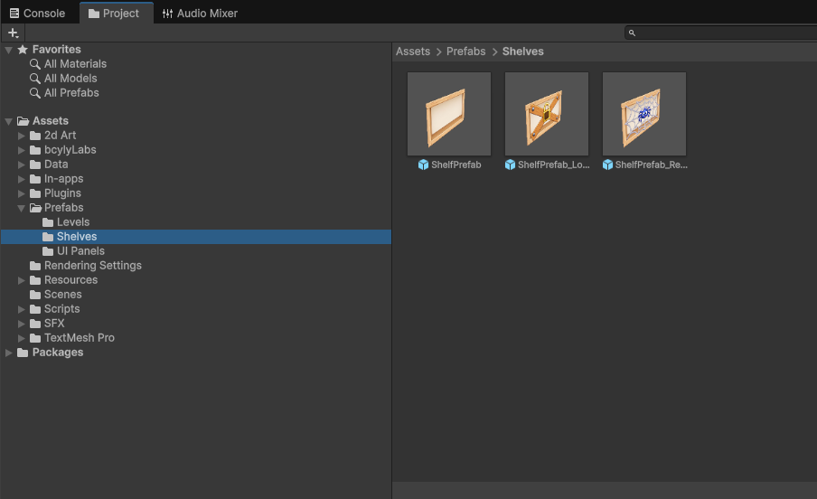

9. Change Shelves & Obstacles
Customize shelf visuals, slot offsets, match rules, lock thresholds, restricted shelves, movers, and slot obstacles.
9.1 Replace shelf graphics
Open Assets/Prefabs/Shelves.

-
01
Open ShelfPrefab
prefab.
-
01
Step 1
Select the object with the shelf's Sprite Renderer. In the supplied example, this is the shelf root.
-
01
Step 1
Assign your new image to Sprite Renderer > Sprite.
-
01
Step 1
Keep its size and pivot close to the original while you test.
-
01
Step 1
Save, then check it in an existing level and a newly generated level.
-
01
Step 1
Check ShelfPrefab_Locked and ShelfPrefab_Restricted too. Replace their artwork or overrides as needed.
Changing the source prefab updates linked settings. A level with an overridden sprite may keep its own image. Open that level and check its overrides if it does not change.
9.2 Shelf settings
| Field | What it does |
|---|---|
| Slots | References the shelf's item positions. Keep these assigned. |
| Slot Spacing | Changes horizontal distance between slots. |
| Slot Local Offset | Moves the slot arrangement inside the shelf. |
| Match Rule: Full Shelf Match | Requires the active shelf slots to be filled with matching items. |
| Match Rule: Triple Match Anywhere | Resolves groups of three matching items on that shelf. |
| Required Match Count | Sets the count used by the matching rule. Keep 3 for the standard game. |
| Shelf Renderer | References the Sprite Renderer used by the shelf. |
The standard game counts a completed match as three removed items. Keep the standard three-item rules for the documented no-code workflow; changing the count alone is not a complete new matching system.
Select a slot child to find Slot State and Back Offset. Slot State controls its availability. Back Offset positions deeper items relative to the front. Adjust these only when you need to change shelf behavior or item alignment.
9.3 Item appearance on shelves
Open Assets/Prefabs/ItemPrefab.prefab to adjust shared Item View settings:
- Front Scale / Back Scale: Size of front and deeper items.
- Back Dim Color: Tint used for items behind the front.
- Auto Fit To Slot / Target Slot Bounds: Fits different sprites into a common display area.
- Base Front Sorting Order / Order Step Per Layer: Controls which item draws in front.
- Progressive Scale Step: Changes scale as depth increases.
Change one setting at a time and check a level with more than one item layer.
9.4 Shelf modifiers
Use the lock and restriction controls in the Level Editor for common setup. For additional settings, select the shelf inside its prefab and expand the relevant component.
| Feature | Editable settings and meaning |
|---|---|
| Shelf Lock | Is Locked, unlock condition, Matches Required, and Key Item. Visual references connect the lock image and counter. |
| Shelf Restricted | Allow Placement, Allow Pick Up, Can Contain Items, and the restriction visual/tint. These let you control which moves are allowed. |
| Shelf Mover | Movement Type, Move Delta, Cycle Duration, Is Moving, and Pause During Match. Move Delta is the travel distance and direction. |
| Slot Obstacle | Clear On Shelf Match and references to its visual. It blocks the slot until cleared. |
A modifier's image is separate from its behavior. Replace the lock, restriction, or obstacle visual without removing the component that controls it.
Lock conditions: Match Count Threshold opens after the required number of matches anywhere in the level. Key Item Matched opens when the chosen item type is matched. Manual waits for an existing external action, such as Unlock.
Movement types: Ping Pong travels back and forth between the starting point and Move Delta. Sine Wave oscillates around the starting point. Give moving shelves enough space so their paths stay readable.